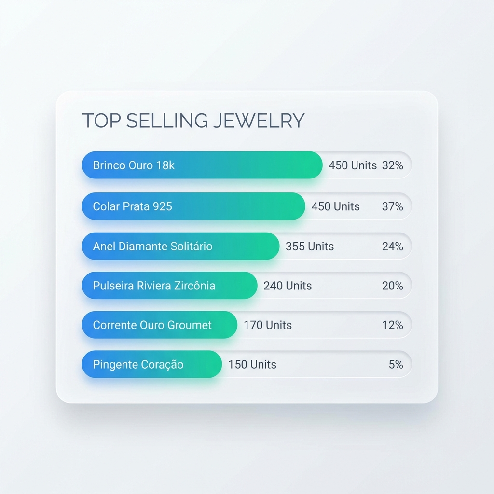

Margem visível e protegida
Separação clara entre receita, custo e lucro por coleção. Sem decisões no escuro.

Governança diária para revendedoras com previsibilidade de giro, metas e rentabilidade.

Cada bloco foca em impacto direto no caixa, margem e performance.
Separação clara entre receita, custo e lucro por coleção. Sem decisões no escuro.
Visão do que gira, do que trava caixa e do que exige ação imediata.

Metas, ranking e acompanhamento semanal com leitura simples e objetiva.
Processo simples, mas orientado a decisão e acompanhamento real.
Dados organizados por coleção, canal e equipe para leitura diária.
Alertas de margem e giro para priorizar ações com impacto.
Metas claras e indicadores que comprovam resultado.
Um painel único para leitura de margem, giro e metas.
Receba um diagnóstico rápido com base no seu fluxo atual de vendas e estoque.
Histórias curtas, impacto real.
“Reduzimos o capital parado em 28% em 60 dias.”
“A equipe bateu meta por 3 meses seguidos com leitura semanal.”
O que líderes de operação precisam saber antes da demo.
Mapeamos o fluxo atual e organizamos dados em semanas, sem interrupção da operação.
Sim. O foco é consolidar canais e padronizar a leitura de margem e giro.
A plataforma mantém consistência de metas, indicadores e acompanhamento por equipe.
Suporte dedicado com acompanhamento de resultados e ajustes de rotina.